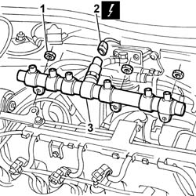

1060F30 SINGLE FUEL MANIFOLD PIPE - R.R.
- Path
- Procedures > 10 ENGINE > 1060 DIESEL FUEL INJECTION SYSTEM > 1060F INJECTORS AND LINES > 1060F30 SINGLE FUEL MANIFOLD PIPE - R.R.
- Kind
- repair procedure (removal / refitting; the operation number is the code)
- Applies to
- engines: 2.4 JTD 10V; all production periods
- Interactive page
- https://sloeber94.github.io/elrnDB-lThss/en/#/100679
Applies to: all engines; all production periods
 Removing
Removing
 Refitting
RefittingSee in Op. 1016A10
See in Op. 1060F20
See in Op. 1060F36
1. Undo the nuts fixing the fuel manifold to the intake manifold.
2. Disconnect the electrical connection for the fuel pressure sensor.
 | Description | Connector |
|---|---|---|
2 | Fuel pressure sensor | K083 |
3. Remove the single fuel manifold.

Applies to: all engines; all production periods
Refitting
Removing- Position the single fuel manifold in the special housing on the intake manifold.
- Tighten the nuts fixing the fuel manifold to torque.
 | Value - daNm | Fastening | Component | Ø |
|---|---|---|---|---|
. | 2.5 | Nut | INJECTOR FUEL MANIFOLD (DIESEL) | M8 |
- Connect the electrical connection for the fuel pressure sensor.
| Description | Connector |
|---|---|---|
. | Fuel pressure sensor | K083 |
See in Op. 1060F36
See in Op. 1060F20
See in Op. 1016A10